PaperWeekly 第十期
引
本期PaperWeekly的主题是基于翻译模型(Trans系列)的知识表示学习，主要用来解决知识表示和推理的问题。表示学习旨在将研究对象的语义信息表示为稠密低维实值向量，知识表示学习主要是面向知识图谱中的实体和关系进行表示学习。使用建模方法将实体和向量表示在低维稠密向量空间中，然后进行计算和推理。一般而言的应用任务为triplet classification 和link prediction.自从2013年TransE模型提出后，产生了一系列模型对TransE模型进行改进和补充,比如TransH、TransG等等。本期PaperWeekly主要提供了Trans系列的7篇文章供大家赏读。
paper目录：
（1）TransE，NIPS2013，Translating embeddings for modeling multi-relational data。
（2）TransH，AAAI2014，Knowledge graph embedding by translating on hyperplanes。
（3）TransD，ACL2015，Knowledge graph embedding via dynamic mapping matrix。
（4）TransA，arXiv2015，An adaptive approach for knowledge graph embedding。
（5）TransG，arxiv2015，A Generative Mixture Model for Knowledge Graph Embedding)
（6）KG2E，CIKM2015，Learning to represent knowledge graphs with gaussian embedding。
（7）TranSparse，AAAI2016，Knowledge graph completion with adaptive sparse transfer matrix。
TransE:Translating Embeddings for Modeling Multi-relational Data
作者
A Bordes, N Usunier, A Garcia-Duran, J Weston, O Yakhnenko
单位
CNRS, Google inc.
关键词
Embedding entities and relationships, Multi-relational data, link prediction
文章来源
NIPS 2013/12
问题
如何建立简单且易拓展的模型把知识库中的实体和关系映射到低维向量空间中，从而计算出隐含的关系？
模型
传统训练知识库中三元组(head,relation,tail)建模的方法参数特别多，导致模型太复杂难以解释，并且需要很大的计算代价，很容易出现过拟合或欠拟合问题。而简单的模型在表现上与复杂的模型几乎一样，但更易拓展。TransE的训练过程如下图：
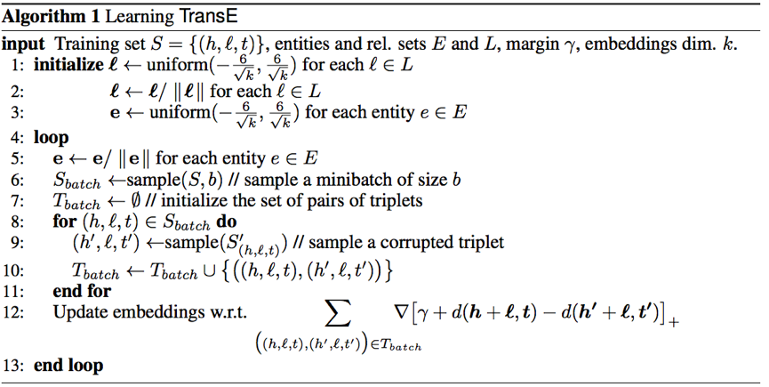
TransE模型的训练中，第12步是损失函数，对E和L做uniform初始化之后，让正确的h+l-t结果趋近于0，让错误的h‘+l-t’的结果变大，损失函数结果大于0取原值，小于0则取0，这种hinge loss function可以尽可能的将对和错分开，模型使用SGD训练，每次更新可以只更新这个batch里的三元组的向量，因为参数之间并没有冲突。
资源
数据集 WordNet http://wordnet.princeton.edu/wordnet/download/
数据集 Freebase http://developers.google.com/freebase/
Code: https://github.com/thunlp/KB2E
简评
本文提出了一种将实体与关系嵌入到低维向量空间中的简单模型，弥补了传统方法训练复杂、不易拓展的缺点。尽管现在还不清楚是否所有的关系种类都可以被本方法建模，但目前这种方法相对于其他方法表现不错。TransE更是作为知识库vector化的基础，衍生出来了很多变体。
TransH:Knowledge Graph Embedding by Translating on Hyperplanes
作者
Zhen Wang1, Jianwen Zhang2, Jianlin Feng1, Zheng Chen2
单位
Sun Yat-sen University
microsoft
关键词
knowledge graph embedding, Multi-relational data
文章来源
AAAI 2014
问题
对知识库中的实体关系建模,特别是一对多,多对一,多对多的关系。设计更好的建立负类的办法用于训练。
模型
过去指示图库建模的方法参数过多, TransE在一定程度上解决了这个问题, 但是TransE过于简单，很难对一对多,多对一和多对多关系建模。所以为了平衡模型复杂度和建模效果，TransH将把关系映射到另一个空间（如下图 ）。 注意: 这种想法和Distant Model (Bordes et al. 2011)很相似，但是TransH用了更少的参数， 因为TransH假设关系是向量而不是距离。
这个模型的一个亮点就是用尽量少的参数对复杂的关系建模。 下图罗列了相关工作的模型以及复杂度。图中可以看到从TransE到TransH并没有添加太多的参数（Unstructured只是TransE简化版）。Bilinear，Single Layer， NTN对关系或者实体进行了非线性的转换，作者认为是没有必要的（增加了模型复杂度）。
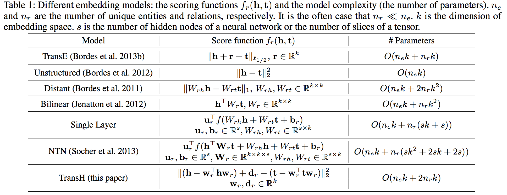
TransH模型的训练和TransE类似 （SGD优化） ，下面是损失函数（因为一些限制，后面加入了拉格朗日乘数）。论文另一个亮点是设计了一种负类抽样的方法，即一对多的时候，给head更多的抽样概率， 同样的多对一的时候，给tail更多抽样概率。
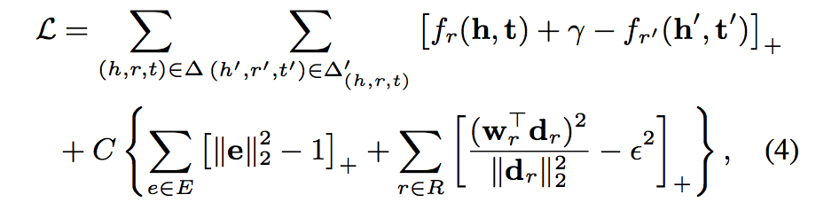
资源
数据集 WordNet:http://wordnet.princeton.edu/wordnet/download/
数据集 Freebase: http://developers.google.com/freebase/
Code:https://github.com/thunlp/KB2E
相关工作
（1）TransE (Bordes et al. 2013b): 和TransH相比，它没有将关系映射到另一个空间，关系由一个向量r表示。
（2）Unstructured Model：简化版的TransE，假设r = 0。
（3）Structured Embedding： 使用了两个关系相关的矩阵，分别用于头h和尾t，评估函数为:
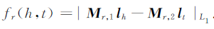
该方法并没有抓住实体和关系之间的关系。
（4）Single Layer Model(SLM)：使用了神经网络，评估函数为:
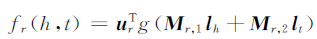
（5）Distant Model (Bordes et al. 2011)：它将实体映射到另一个空间，然后假定关系是距离而不是向量（因为用了2个不同矩阵映射实体，所以对实体关系建模并不是很好）。
（6）Bilinear Model (Jenatton et al. 2012; Sutskever, Tenen- baum, and Salakhutdinov 2009)，Single Layer Model (Socher et al. 2013)，NTN (Socher et al. 2013)：他们都是使用非线性函数映射实体，这样模型表达能力虽然好但是太多参数也太复杂了（容易过拟合）。
简评
论文提出的TransH模型，为了解决TransE对一对多，多对一，多对多关系建模的难题。它权衡模型复杂度和模型表达能力。而且还设计了复杂取样的办法用于训练。
TransD: knowledge graph embedding via dynamic mapping matrix
作者
Guoliang Ji, Shizhu He, Liheng Xu, Kang Liu and Jun Zhao
单位
中国科学院自动化研究所 National Laboratory of Pattern Recognition (NLPR)
关键词
knowledge graph embedding, link prediction.
文章来源
ACL2015
问题
知识图谱中的link prediction。
模型
在link prediction上的TransE扩展模型，函数仍然为:
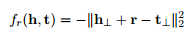
但h丄和t丄为entity向量h和entity向量t在该relation r上的投影表示。投影定义为：
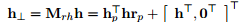
其中(h_p)^T为某entity的投影向量，h为该entity的表示向量。
资源
数据集 WordNet http://wordnet.princeton.edu/
数据集 FreeBase https://developers.google.com/freebase/
相关工作
如果TransD的所有投影向量为0，TransD就是TransE。类似的还有TransR/CTransR，他们对每个relation定义了一个mapping矩阵，参数更多计算复杂度更大。
简评
模型只涉及vector的相乘，因此计算复杂度较小，效果也取得了state-of-the-art，适合用于规模很大的知识图谱。
TransA:An Adaptive Approach for Knowledge Graph Embedding
作者
Hao Xian, Minlin Huang, Hao Yu, Xiaoyan Zhu
单位:
清华大学 State Key Lab on Intelligent Technology and Systems
关键词：
knowledge graph embedding, elliptical equipotential hypersurfaces, metric learning.
文章来源
arXiv
问题
如何解决了translation-based 知识表示方法存在的过于简化损失度量，没有足够竞争力去度量知识库中实体/关系的多样性和复杂性问题。
模型
知识图谱在AI搜索和应用中扮演着越来越重要的角色，但是它是符号表示，有一定的逻辑性的，因此如何表示这些关系就成了一个很大的挑战，为了解决这个挑战，很多模型如TransE, TransH, TransR纷纷被提出来，在这些模型中，基于几何关系的方法是很重要的一个分支，而基于几何关系的方法是使用K维的向量表示实体或者关系，然后利用一个函数f_r(h,t)来度量三元组(h, r, t)，而他们都是基于一个准则h+r=t。
因此就使用了同一个损失度量h+r=t，这种损失度量其实是利用了在一个球形等价超平面，越接近中心，三元组的可信度越高，因此从未匹配的t中寻找合适的t就变得很苦难，同时这种方法也很难处理一对多，多对一，多对多的关系。因此这些方法不够灵活。
具体可以从图1(a)看出。同时这种方法将等价对待向量中的每一维，但实际上各个维度的重要性是不同的，只有一些维度是有效的，其他维度可以认为是噪音，会降低效果，具体见图2(a).
因此作者提出了另一种损失度量函数
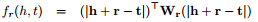
通过增加一个矩阵Wr，首先利用了一个椭圆等价超平面，解决了上述问题1，具体见图1(b)；同时利用LDL分解，公式变为:
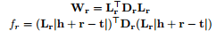
其中D_r就是一个对角阵，而对角阵中的每个值的大小，正好说明了每一维的不同重要程度，也就解决了上述问题2，具体减图2(b)。
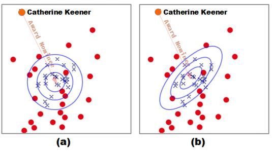
图1
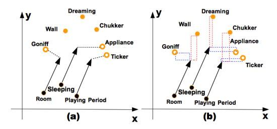
图2
资源
数据集 Wordnet http://wordnet.princeton.edu/
数据集 FreeBase https://developers.google.com/freebase/
相关工作
如模型部分介绍的，当前的一些现有模型都是基于一个准则h+r=t，因此就使用了同一个损失度量h_r+r=t_r，只是在h_r和t_r的表示上有不同：
（1）TransE h_r = h, t_r = t
（2）TransH h_r = h - (w_r)^T.h.w_r, t_r = t - (w_r)^T.t.w_r
（3）TransR h_r = M_r.h, t_r = M_r.t
（4）TransM则是预先计算了出每一个训练三元组的直接权重
还有很多类似的模型，这里就不再介绍了。
简评
感觉这篇文章的思路比较简单，就是针对当前模型的一些不足，更换了一个损失度量函数。但是几点还是值得学习的，首先通过图像来描述不同的损失度量函数，给人一个更直观的感觉；其次针对向量表示中的区别对待，感觉很有attention mechanism的感觉，对不同的triple关注向量表示的不同维度，以取得最好的效果，这点是非常值得借鉴参考的。
TransG : A Generative Mixture Model for Knowledge Graph Embedding
作者
Han Xiao, Minlie Huang, Yu Hao, Xiaoyan Zhu
单位
清华大学 State Key Lab on Intelligent Technology and Systems
关键词
knowledge graph embedding, generative mixture model, multiple relration semantics.
文章来源
arXiv2015
问题
解决多关系语义(multiple relation semantics)的问题。
模型
传统的基于翻译的模型采用h_r+r= t_r(其中，h_r为头部实体，t_r为尾部实体，r为头部
实体跟尾部实体的关系)，仅仅对一个关系赋予一种翻译向量。
它们不能细分多关系语义，比如，(Atlantics, HasPart, NewYorkBay)和(Table, HasPart, Leg)两个的关系都是HasPart，但是这两个的关系在语义上不同，第一个是“部件”的关系，第二个是“位置”的关系。TransG能够解决关系的多语义问题。如图所示，多关系语义分析可以提高三元组的分类准确度。
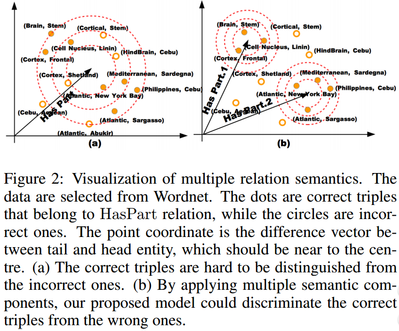
TransG利用贝叶斯非参数无限混合模型对一个关系生成多个翻译部分，根据三元组的特定语义得到当中的最佳部分。最大数据相似度原理用来训练，优化采用SGD。实验结果在link prediction和triple classification这两种任务上都优于目前最好的结果，运行速度与TransE(最快的方法)成正相关，系数为关系语义部分的数目。
资源
数据集 WordNet http://wordnet.princeton.edu/wordnet/download/
数据集 Freebase http://developers.google.com/freebase/
相关工作
大多数都已介绍，这里就只说明CTransR，其中关系的实体对被分类到不同的组，同一组的实体对共享一个关系向量。相比较而言，TransG不需要对聚类的预处理。
简评
这篇文章的idea比较重要，考虑到一种关系存在的多语义问题，相当于对关系进行了细化，就是找到关系的隐形含义，最终从细化的结果中选出一个最佳的关系语义。这个在应用中很有意义，不同的语义可能需要不同的应对方法，可以借鉴。
KG2E:KG2E_learning to represent knowledge graphs with gaussian embedding
作者
Shizhu He, Kang Liu, Guoliang Ji and Jun Zhao
单位
National Laboratory of Pattern Recognition
Institute of Automation, Chinese Academy of Sciences, Beijing, 100190, China
关键词
Distributed Representation, Gaussian Embedding, Knowledge Graph
文章来源
CIKM 2015
问题
本文所解决的问题是知识图谱的表示问题（即将知识图谱表示为低维连续向量空间），本文使用Gaussian Distribution 来表示实体和关系，提出了用Gaussian Distribution的协方差来表示实体和关系的不确定度的新思想，提升了已有模型在link prediction和triplet classification问题上的准确率。
模型
传统的表示学习的表示学习的方法和计算比较复杂，自TransE模型诞生后，很多模型都是在TransE的基本思想上加以改进，KG2E模型也是一样。
KG2E模型使用高斯分布来表示实体和关系。
模型实例见下图：
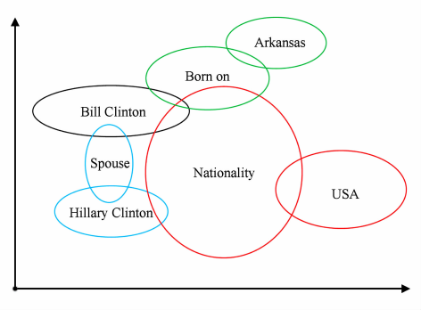
每个圆圈代表不同实体与关系的表示，它们分别于“Bill Clinton”构成三元组关系，圆圈大小表示的是不同实体或关系的不确定度。
模型算法流程图如下：
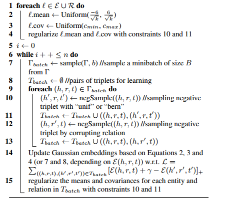
算法解读：
输入：训练集三元组，KG中所有的实体和关系，以及其它的一些参数。
输出：KG中所有实体和关系建模后生成的Gaussian Embeddings.（主要包含两个部分，均值（向量）和协方差（矩阵））
line 1到line 4主要是数据的归一化
line 5到line 15是算法实现部分：模型采用的是minibatch的训练方法，每一个minibatch的训练中都会进行负采样，并将负采样的样例和正例样例混合在一起学习，然后使用评分函数进行评估，要达到的目的是正例三元组的得分比负例三元组高或者低（高低取决于具体的评分而函数的设定）。在一次一次的迭代中不断更新结果，最后将得到的means和covariance进行正则化。
文章核心公式：
（1）评分函数
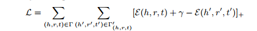
（2）KL散度的能量函数
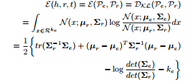
（3）期望概率能量函数
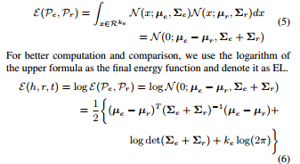
资源
相关工作
（1）TransR，2015年AAAI，Learning entity and relation embeddings for knowledgh completition。
简评
创新点：
（1）以前的文章是属于point-based，KG2E是属于density-based的。
（2）提出了(un)certainty的概念，在建模过程中融入了关系和实体语义本身的不确定性的知识，使用高斯分布的协方差表示该实体或关系的不确定度，高斯分布的均值表示实体或关系在语义空间中的中心值。
（3）使用了新的score funciton：KL-divergence和expected likelihood
应用场景：link prediction，triplet classification,knowledge reasoning
不足之处：本文提出的方法在link prediction的many-to-many relations上的预测性能不是很好，主要原因是KG2E模型没有考虑实体的类型和粒度。
7.TranSparse
Knowledge Graph Completion with Adaptive Sparse Transfer Matrix
作者
Guoliang Ji, Kang Liu, Shizhu He, Jun Zhao
单位
中科院模式识别国家重点实验室
关键词
Knowledge Graph Embedding,Sparse Matrix
文章来源
AAAI 2016
问题
针对不同难度的实体间关系，使用不同稀疏程度的矩阵（不同数量的参数）来进行表征，从而防止对复杂关系欠拟合或者对简单关系过拟合。
模型
本文的模型与TransR类似，即对每一个关系r学习一个转换矩阵M_r,将h和t的向量映射到关系向量所在的空间。
不过本文注意到knowledge graph中面临两个问题，分别是heterogeneous（有的实体关系十分复杂，连接许多不同的实体）和unbalanced（很多关系连接的head和tail数目很不对等）。如果只使用一个模型应对所有情况的话可能会导致对复杂关系underfit，对简单关系overfit。因此本文认为需要对症下药，复杂的关系就需要下猛药（用有更多的参数的复杂模型），简单关系就简单处理（较少的参数）。
但是怎么实现这样灵活的建模？在方法上本文借用了SparseMatrix，如果关系比较复杂就用比较稠密的矩阵，如果关系简单则用稀疏矩阵进行表达。文章假设关系的复杂程度正比于包含该关系的triplet数目，并根据两类问题提出了对应的稀疏矩阵初始化方法。不过并没有提出同时解决两类问题的统一方案。
- 针对heterogeneity问题的模型叫做TranSparse(share)，模型参数sparse degree，theta_r，是由下列公式确定:

其中N_r是该关系r所连接的triplet数目，N_r*是数据集中最大的关系triplet数目。通过这个sparse degree我们就可以确定参数矩阵的稀疏程度了。entity的向量通过下式进行转换：
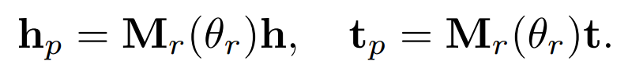
- 针对imbalance问题提出的TranSparse(separate)方法也十分类似，即在关系的head和tail两端使用不同复杂度的matrix。sparse degree的公式与上面TranSparse(share)的几乎一样，只不过N_r和N_r*替换成了entity的个数。如果某一端要连接更多不同的entity，那么这一端就需要更复杂的模型来表征（matrix有更多非零参数）。
确定这个sparse degree之后，我们就可以初始化对应的稀疏参数矩阵了（原文中提到了Structured与Unstructured两种矩阵形式）。目标函数以及训练过程与其他工作一致，只不过在进行训练时我们只对矩阵中的非零部分进行更新。
最后模型在triplet分类和链接预测任务上进行实验，相比于先前模型取得了更好的成绩，不过相比于TranD优势并不十分明显。提出的两个模型中TranSparse(separate)的表现更好。
资源
数据集 WordNet http://wordnet.princeton.edu/wordnet/download/
数据集 Freebase http://developers.google.com/freebase/
相关工作
上面的相关工作已经介绍差不多了，这里不再赘述。
简评
TranSparse模型主要是为了解决关系和实体的异质性和不平衡性而提出，问题针对性强。
总结与展望
最近几年人们对知识表示方法的探究一直都在进行，知识表示学习对于计算机如何理解和计算知识的意义是重大的。在2013年embedding的思想出现之前，人们基本采用one-hot的表示方法来表示实体，近几年知识表示的核心思想就是如何找到合适的方法来将知识图谱emmbedding到向量空间，从而在向量空间中进行计算，并且也在这方面取得了不错的进展。
但知识表示学习仍然面临着挑战，主要包括以下几个方面：（1）对于多源知识融合的表示学习，如何将知识库中的文本等信息加入到学习中。（2）如何进行更加复杂的知识推理。（3）对于知识图谱无法表达的信息，应该进行如何表示和推理。（4）如何在知识库中融入常识信息。
参考文献说明：本文主要参考清华大学刘知远老师的《知识表示学习研究进展》这篇综述。